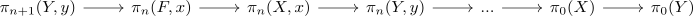

long exact sequence of a kan fibration
Proposition
Let $K$ be a Kan complex, $f: X \rightarrow Y$ a kan fibration and $x \in X_0$ a point. Then for the fibre $F$ of $f$ over the point $f(x)$ there exists an sequence

- of groups for $n \geq 1$
- of pointed sets for $n = 0$ (cf. exact sequence of sets)